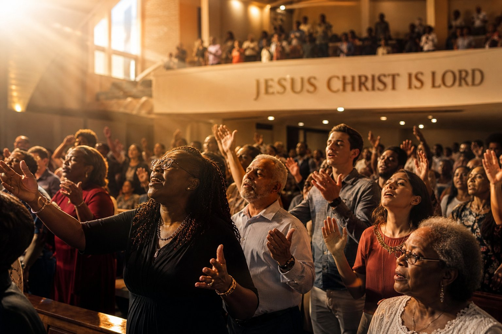

EXPRESSION NO. 01
Divine Service Proclamations
Prophetic preachings marked by the presence of the Holy Spirit, dynamic spiritual breakthrough, repentance, and resurrection power delivered from the holy altar by Apostle Polycarp Samuel.
The Unshakable Foundation: Standing When Nations Tremble
In this fiery exhortation, Apostle Polycarp draws from Hebrews 12 and Jeremiah 1 to reveal how the believer in Yeshua Hamashiach remains steadfast amid global instability through the mantle of resurrection grace.

Breakthrough
Sabbath Morning · 48 Mins
Tarrying for the Latter Rain
The imperative of wholehearted prayer before the throne of grace to witness revival.
Listen Now Spiritual Warfare
Spiritual Warfare
Holy Convocation · 1 hr 02 mins
The Broken Yoke & Resurrection Liberty
Walking in freedom from generational entanglements by the unblemished blood of Yeshua.
Listen Now
Covenant Prayer
First Day Solemnity · 55 Mins
Confronting the New Month at the Altar
Standing in covenant decree to unlock double portion blessings and angelic defense.
Listen Now